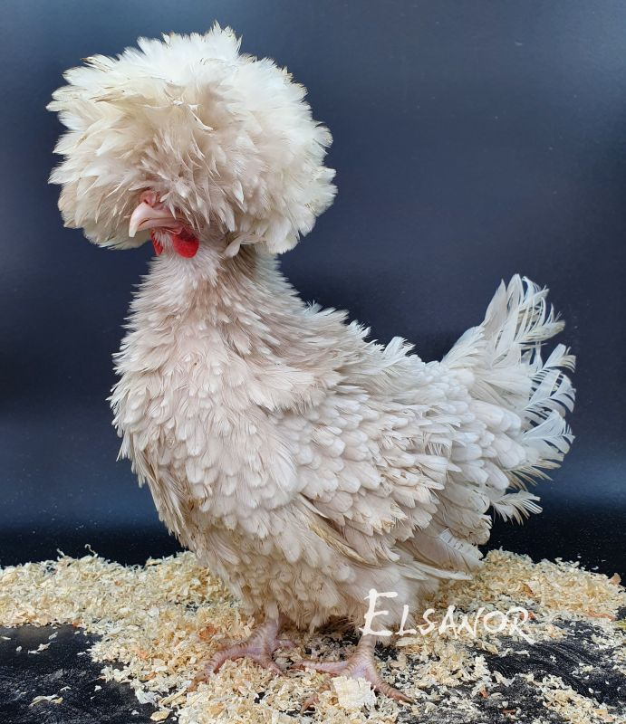

L' histoire des crabes
La chevre
Bande de cochons
L'histoire des poules
VENTE DES POULES LES PLUS QUOICOUBAKAAA
nb:dans le monde, il pourrait y avoir plus de 2000 espèces de poules.
L'esperance de vie de la poule est estimer de 5 - 10 ans
PS: nos poule sont qualicatives et sont steriliser
- RACE DES POULES VENDUES :
- Poule hollandaise
- Poule Houdan
- Poule Brahma
POULE HOLLANDAISE / PRIX : 3333$
La poule hollandaise huppé attire souvent le regard avec sa huppe ébourifée . Géneralement naine ,elle se montre trés vite familiere

POULE HOUDAN / PRIX : 2553$
La poule HOUDAN existe en plusiers variétés de couleur . Elle se reconnait grace a sa crete, elle a une posture assez imposante par rapport aux autre poules

POULE BRAHMA / PRIX 5467$
La poule BRAHMA est une poule au corpos tres emplumé . Elle est un peu exigeante avec les menbres de sa famille commle les autres volailles

L'ALIMENTATION :
DANS NOTRE éLEVAGE NOS POULES SE NOURRISSENT Géneralement DE GRAINES 100% FAIT MAISON A BASE DE BROCOLIS,CAROTTE ET DE PAUME.
CES GRAINE PEUVENT CE TROUVER SUR NOTRES SITE AU PRIX DE 43 $